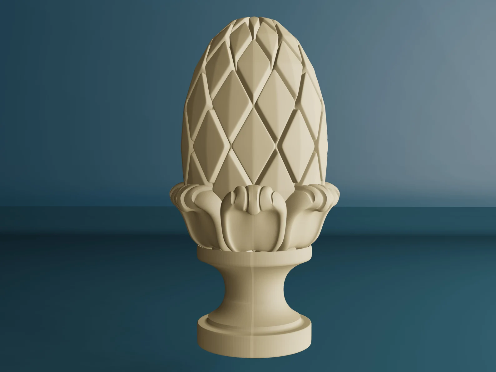
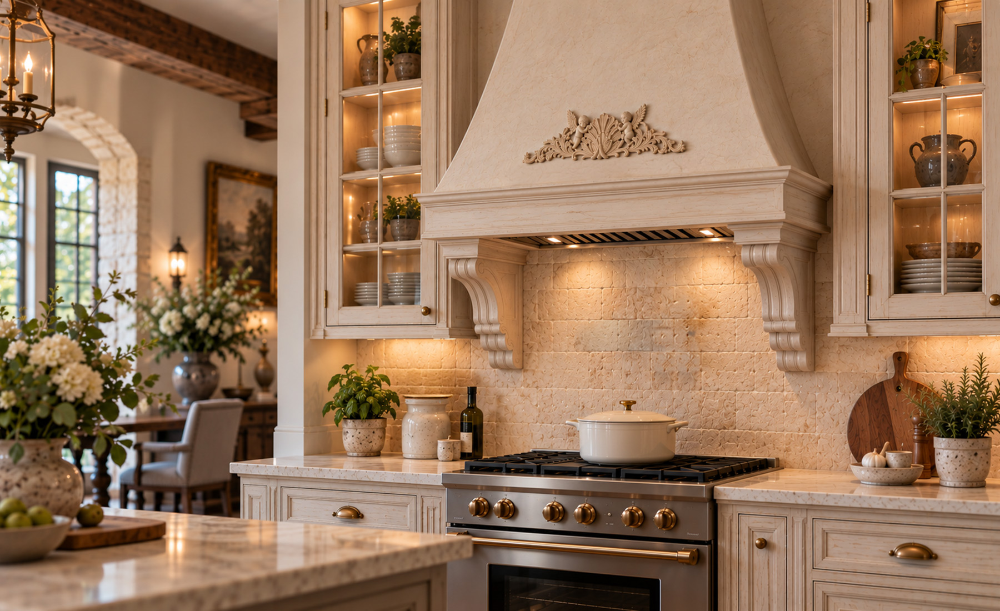
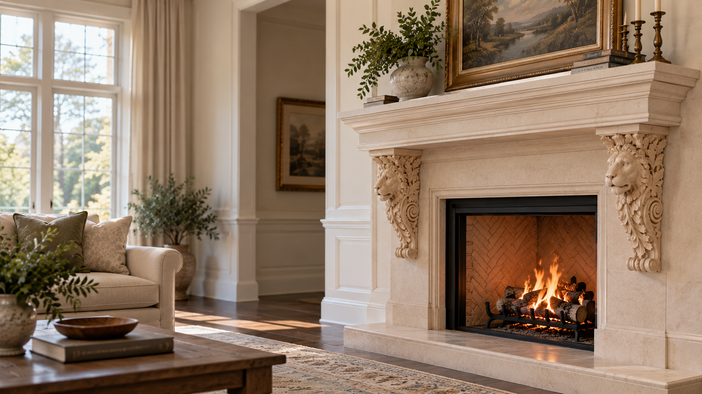

Carved Wood Finials
Add a distinctive finishing detail to stair posts, furniture, and architectural features.
Shop Finials
Decorative Wood Carvings & Architectural Ornaments
Find carved wood finials, corbels, capitals, appliqués, and decorative accents for furniture, cabinetry, staircases, and architectural features.
Shop the Collection
The Collection
Explore decorative wood carvings in a variety of styles and sizes. From subtle embellishments to striking architectural accents, discover the pieces that make your project uniquely yours. What to check before ordering

Add a distinctive finishing detail to stair posts, furniture, and architectural features.
Shop Finials
Bring decorative dimension to shelving, cabinetry, mantels, and architectural millwork.
Shop CorbelsIntroduce classical character and ornamental detail to columns, pilasters, and interior features.
Shop Capitals
Embellish cabinetry, furniture, doors, and panels with intricately carved decorative designs.
Shop AppliquésExplore decorative wood accents that bring warmth, personality, and handcrafted character to interiors.
Shop Decor
The right decorative detail can transform the look and feel of a room. A carved corbel adds character to a kitchen island. An ornamental appliqué brings new life to cabinetry. A distinctive finial completes a staircase.
Whether you're creating something new or enhancing an existing design, carved wood details make the difference between ordinary and memorable.
Shop the CollectionHome Interior Wood Carvings
From traditional ornamentation to distinctive architectural accents, our collection gives you the flexibility to bring your ideas to life.
Explore decorative styles that complement traditional, transitional, and custom interiors.
Choose from a variety of dimensions to suit furniture, cabinetry, and architectural applications.
Choose unfinished wood carvings ready to stain or paint to complement your project.
Add decorative details to new construction, renovations, furniture, and custom woodworking.
Whether you're a homeowner adding a personal touch, a designer refining a vision, or a contractor completing a project, the right detail is within reach.
Shop the Collection
Inspiration in Context
Beautiful on their own. Extraordinary in the spaces they transform. Explore our carvings and discover how each detail finds its place.

Helpful Details
A few helpful details before you order. From sizing and materials to finishing and installation, here's what to know before choosing your wood carvings.
Yes. These items are considered special orders and take longer to deliver. Contact us at (800) 555-3694 with your preferred dimensions, and we'll let you know if we can accommodate your request.
Most pieces are in stock and ready to ship. Stocked items generally ship the same day when ordered by 1 PM Central Time. Select your delivery preference during checkout. Special orders and out-of-stock items typically arrive in 6–8 weeks.
All pieces are made from real wood, typically ash or oak.
Yes. All pieces come sanded and ready for staining, sealing, or painting.
Installation depends on the type and size of the carving. Appliqués are typically attached with wood glue and sometimes finishing nails. Corbels and capitals may require screws or other mounting hardware, while finials are often secured with dowels or threaded fasteners. Always confirm the appropriate mounting method for your specific piece. Decorative corbels should not be assumed to provide structural support.
Find your project’s focal point
From a single decorative accent to an entire interior project, discover carved wood details that bring your ideas together.
Explore the collection and choose the pieces that make your design distinctive.
Shop the Collection